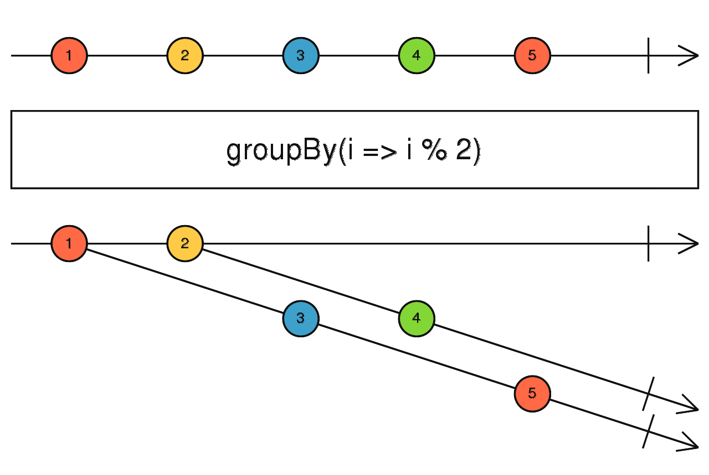

groupBy
参数列表：
-
keySelector
function(value: T): K
一个函数，接收Source的value为入参，返回代表这个参数的key的值
-
elementSelector
function(value: T): R
(可选)一个函数，接收Source的value为入参，返回实际要emit出去的value
-
durationSelector
function(grouped: GroupedObservable<K, R>): Observable<any>
(可选)决定每个group存在多长时间，目前用法不太清楚。文档里也没写
返回值: Observable <GroupedObservable <K,R>>
珠宝图:

功能说明:
- groupBy 订阅Source,并且根据keySelector返回的key,把原始value分配到一个个组里(GroupedObservable)
- 返回的是一个个GroupedObservable，使用者需要订阅这些GroupedObservable得到实际发出的value
备注事项:
点击不同按钮查看不同demo 代码效果